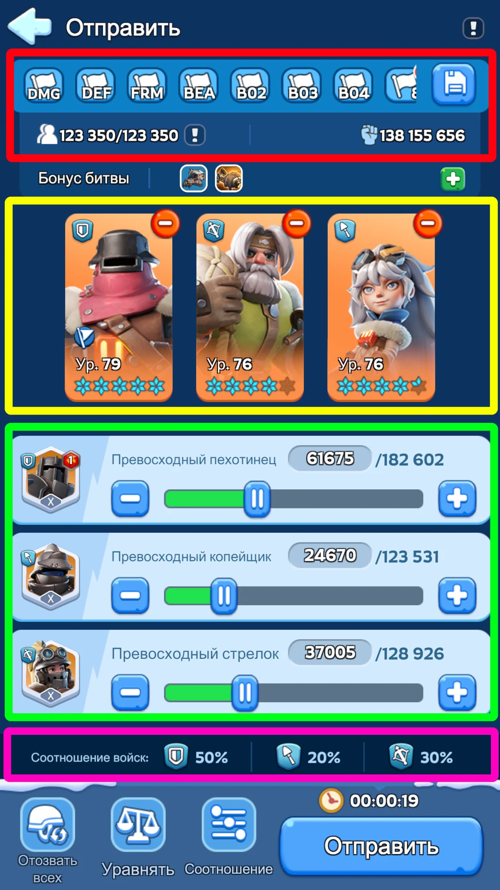
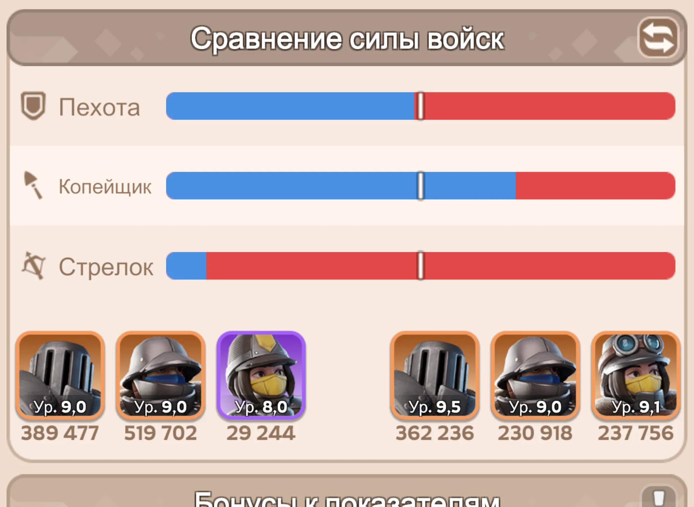
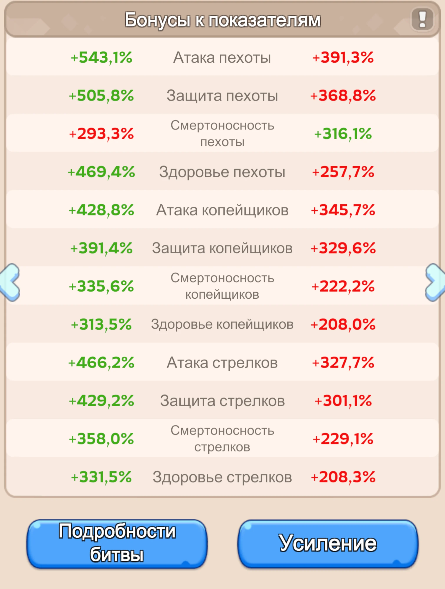
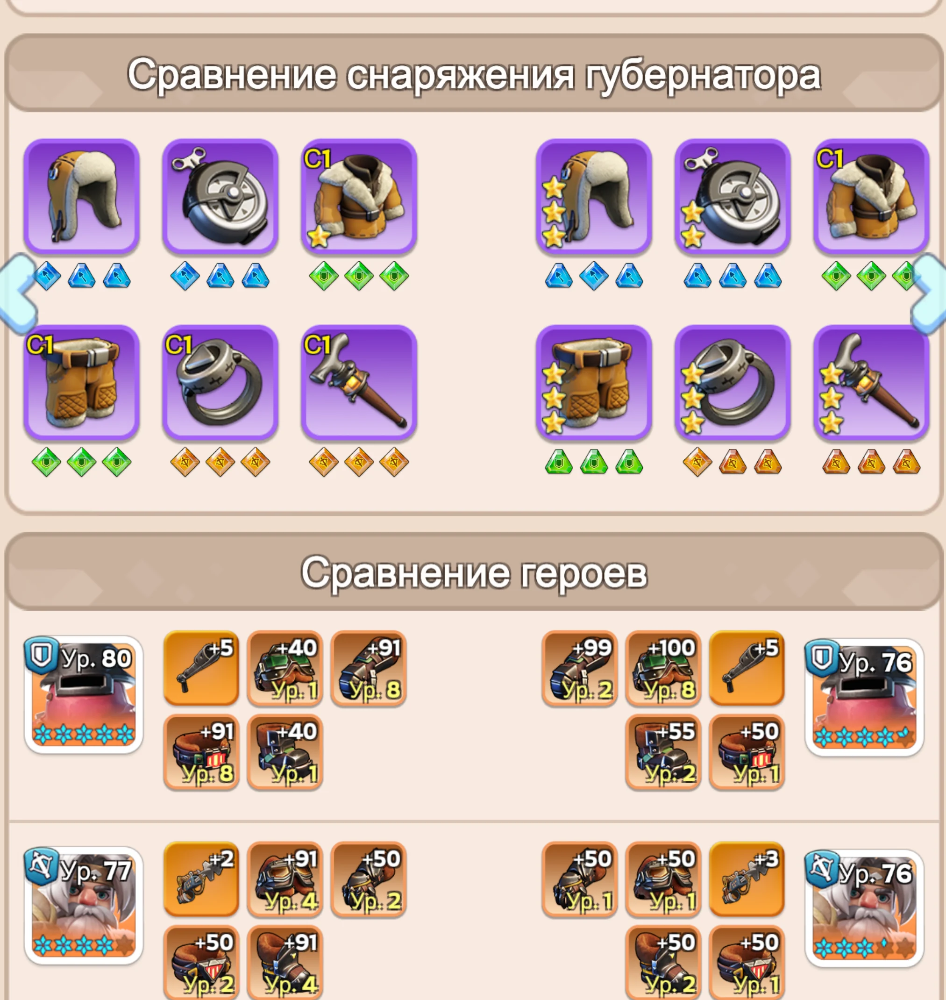
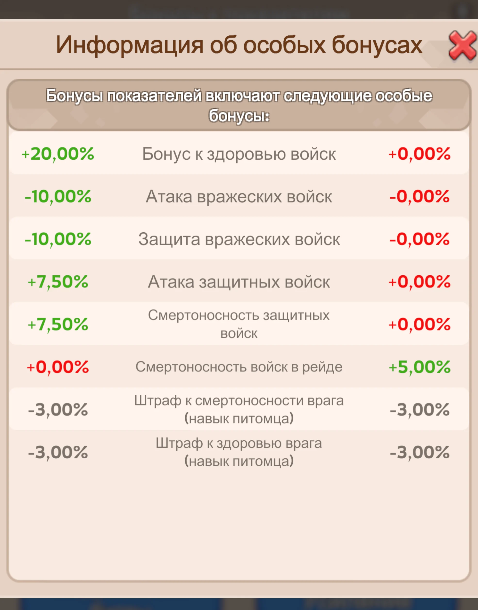
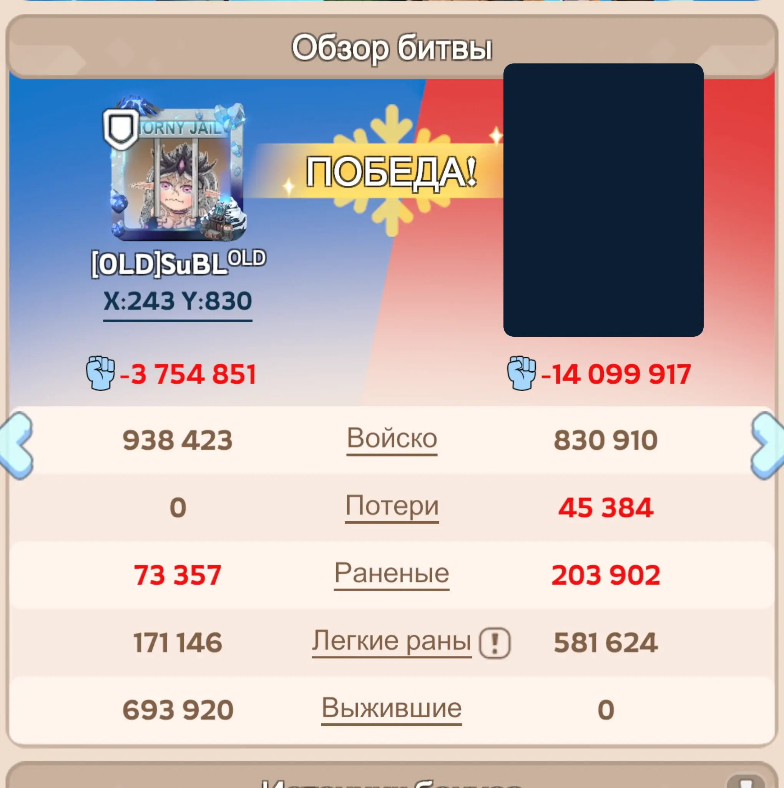
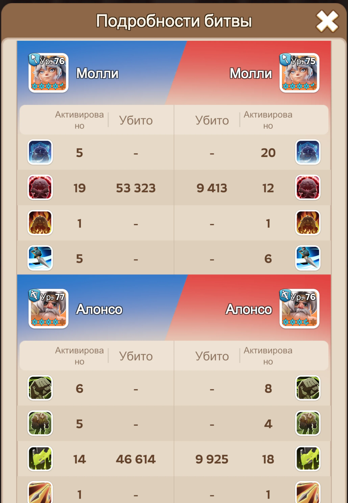
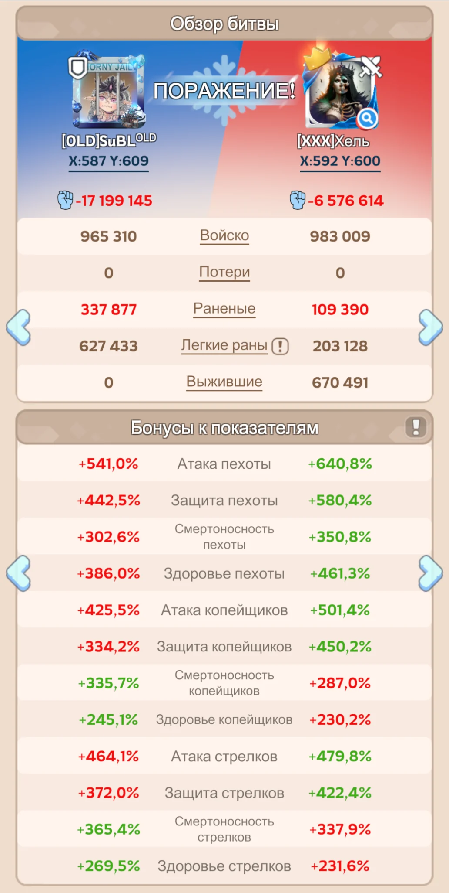
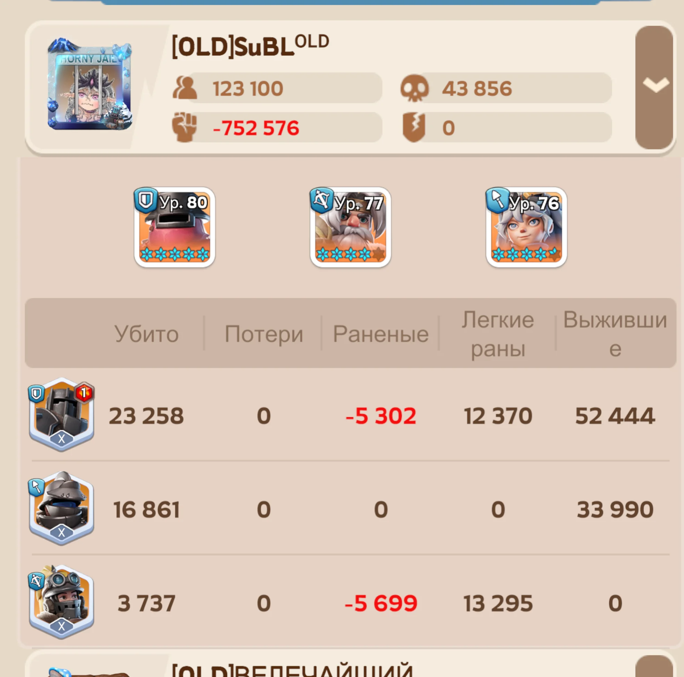

0. Из чего состоит сила марша
Удобнее мыслить не одной цифрой мощности, а пятью слоями. Если хотя бы один из них заметно проседает, красивый общий показатель аккаунта бой не спасёт.
1. Три типа войск
Фронт. Принимает основной входящий урон и покупает время задним рядам. Главные защитные характеристики — здоровье и защита.
Средний ряд. Особенно ценны против стрелков и периодически способны наносить урон через передний строй.
Основной источник урона. Особенно сильны против пехоты; для них критичны атака и смертоносность.
Контртип даёт преимущество, но не отменяет разницу в статах, тирах, героях и численности. Сильно более развитый противник спокойно перекрывает выгодный матчап.
2. Как собрать марш
На экране отправки есть четыре разные сущности. Их полезно разделять мысленно: пресет и вместимость, герои, фактическое количество каждого типа войск и итоговое процентное соотношение.

3. Четыре характеристики и 12 статов
У каждого из трёх типов войск отдельно считаются четыре боевые характеристики — итого в отчёте мы сравниваем 12 основных процентов.
Повышает наносимый урон. Особенно важна стрелкам и копейщикам.
Помогает переживать входящие атаки. Критична для пехотного фронта.
Усиливает результативность урона. Основной атакующий приоритет задних рядов.
Увеличивает объём урона, который войска выдерживают. Главный приоритет пехоты.


4. Откуда берутся статы
Проценты в отчёте — не отдельная прокачка. Это итог множества систем аккаунта, сложенных в одну боевую картину.


5. Ралли и гарнизон
В массовом бою важно понимать, чьи характеристики вообще участвуют. Нельзя просто сложить мощь всех игроков и ожидать такой же результат.
⚔️ Ралли
- Основные боевые статы задаёт лидер ралли.
- Три героя лидера участвуют как полноценный состав.
- Участники прежде всего добавляют войска.
- Из первых героев участников выбираются ограниченные первые экспедиционные навыки — поэтому позиция первого героя критична.
🛡️ Гарнизон
- Войска нескольких участников образуют общую защиту.
- Источник защитных статов определяется системой по сильнейшему подходящему участнику.
- Остальные по-прежнему важны войсками и правильными первыми героями.
- Сильный союзник способен резко поднять качество гарнизона даже в чужом объекте.
6. Как читать боевой отчёт
Нормальный анализ идёт от общего к частному. Не начинаем с одного красного процента и не заканчиваем выводом «просто не повезло».
Сравниваем реальную численность, итог: потери, раненые, лёгкие раны и выжившие.
Быстро ищем очевидный перекос по пехоте, копейщикам или стрелкам.
Пехоте особенно смотрим здоровье/защиту; стрелкам и копейщикам — атаку/смертоносность.
Проверяем эффекты, которые не видны в обычной таблице характеристик.
Смотрим источник разницы: губернатор, экипировка героев, виджеты, поколение и прокачка.
Смотрим, сколько раз реально активировались навыки и чем закончился бой для каждого типа войск.


7. Почему можно проиграть при похожей численности
Ниже хороший антипример: численность сторон близкая, но у противника заметное преимущество в большинстве ключевых характеристик. Несколько выигранных нами процентов смертоносности не компенсируют системное отставание по атаке, защите и здоровью.

Пока пехота защитника держит фронт, её копейщики размеренно выбивают стрелков нападающих сквозь строй. Когда стрелки закончились, продавить оставшуюся пехоту становится ещё сложнее.
Смотрим не только проценты. Т10 и особенно FC1–FC3 могут дать заметное преимущество даже при близкой численности и внешне похожих статах.
После занятия объекта участникам нужно успеть заменить героев атаки — например, Джесси — на героев защиты, таких как Сергей или Патрик. Иначе гарнизон получает неподходящие первые навыки присоединившихся героев.
Пассивные навыки эксклюзивных виджетов могут быть ориентированы именно на оборону. Во 2-м поколении это особенно заметно: сильные герои атаки для пехоты и копейщиков с подходящими атакующими виджетами требуют большого доната, поэтому защитные связки для большинства игроков оказываются заметно доступнее.
8. Что реально видно по потерям
Игра не показывает покадрово, «какой ряд закончился первым». В отчёте есть постфактум: сколько каждого типа убито, ранено, легко ранено и выжило. Именно на этих данных и строим выводы.

Финальная схема
- Собираем марш не по мощности, а по тиру + героям + реальному составу.
- Для старта используем 50 / 20 / 30, затем корректируем по серии отчётов.
- Сравниваем не один показатель, а 12 основных статов.
- Отдельно проверяем особые бонусы, снаряжение губернатора и героев.
- В ралли/гарнизоне смотрим, кто является источником статов и какие первые навыки реально вошли.
- Потери читаем только постфактум: убито / ранено / лёгкие раны / выжило.
- Один близкий бой может зависеть от проков; устойчивый вывод делаем по серии похожих отчётов.